基于NSLDE多目标优化算法的
全年8760小时调度策略可视化分析平台
新型电力系统下抽水蓄能减碳效益优化核算系统（以下简称"本系统"）是一款面向电力系统规划与运行优化的专业级Web分析平台。系统基于NSLDE（Non-dominated Sorting Learning Differential Evolution）多目标优化算法，对全年8760小时的风电、光伏、水电、火电及抽水蓄能数据进行高精度建模与可视化分析，为抽水蓄能电站的容量配置、调度策略、碳减排效益评估提供量化决策支持。
本系统以Streamlit为前端框架，集成Plotly交互式图表引擎，支持参数实时调整与即时重算、A/B方案对比、多维度可视化及综合分析报告导出等功能，适用于电力系统研究人员、电网调度规划工程师以及能源政策分析人员。
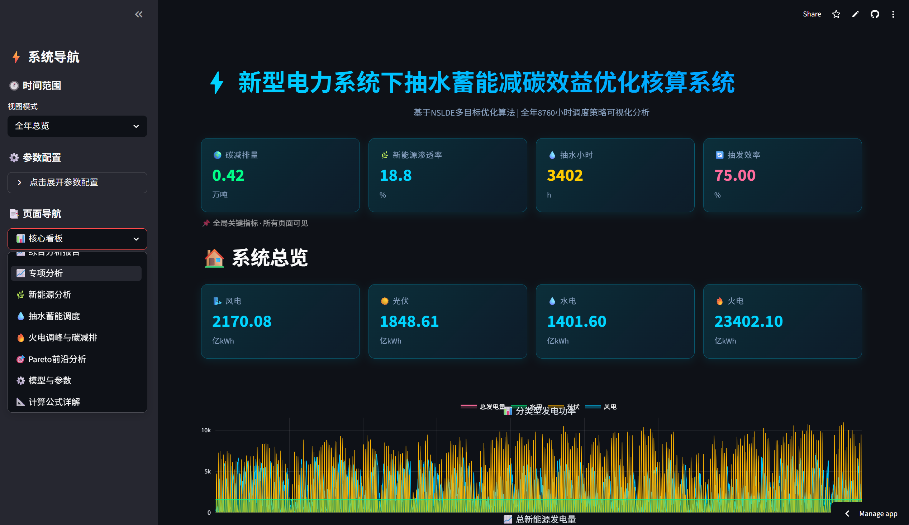
图1-1 系统首页：全局KPI状态条 + 关键指标卡片 + 全年发电曲线
本系统涵盖以下核心功能模块：
| 层级 | 技术选型 | 说明 |
|---|---|---|
| 前端框架 | Streamlit 1.32+ | 纯Python驱动的Web应用框架 |
| 图表引擎 | Plotly 5.x | 交互式图表，支持缩放、平移、悬停提示 |
| 数值计算 | NumPy, SciPy, Pandas | 矩阵运算、数据加载与统计分析 |
| 优化算法 | NSLDE (MATLAB/Python) | 非支配排序学习差分进化算法 |
| 样式系统 | 自定义CSS | 深色科技风主题，移动端响应式适配 |
| 数据存储 | .mat / .txt 文件 | MATLAB数据格式，365天×24小时矩阵 |
| 项目 | 最低要求 | 推荐配置 |
|---|---|---|
| 操作系统 | Windows 10 / macOS 11 / Linux | Windows 11 / macOS 13+ |
| Python版本 | Python 3.9 | Python 3.11+ |
| 内存 | 4 GB | 8 GB+ |
| 浏览器 | Chrome 90 / Edge 90 | 最新版Chrome / Edge / Firefox |
| 依赖包 | streamlit, numpy, scipy, pandas, plotly | |
本系统基于Streamlit框架构建，启动步骤如下：
系统界面采用经典的"侧边栏 + 主内容区"布局：
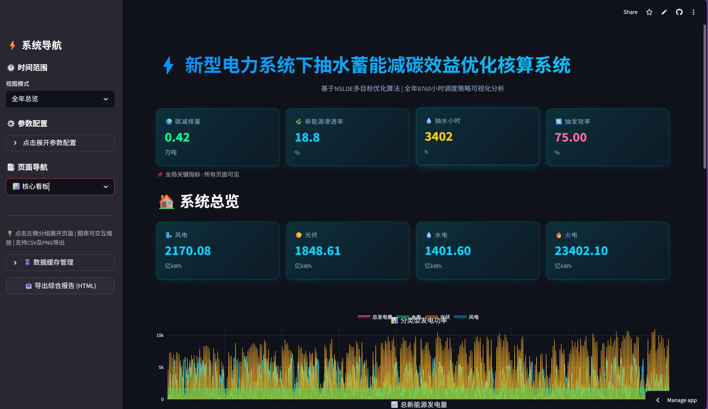
图2-1 系统界面布局：左侧导航栏 + 顶部KPI条 + 主内容区
全局KPI状态条固定显示于主内容区顶部，无论切换到哪个页面，以下四项核心指标均保持可见：
| 指标名称 | 单位 | 计算方式 |
|---|---|---|
| 🌍 碳减排量 | 万吨 | 有抽蓄与无抽蓄情景下火电碳排放的差值 |
| 🌿 新能源渗透率 | % | 风光水总出力 / 所有电源总出力 × 100 |
| 💧 抽水小时数 | 小时 | 全年抽水蓄能处于抽水状态的累计小时数 |
| 🔄 抽发效率 | % | 抽水蓄能总发电量 / 总抽水电量 × 100 |
系统总览（导航路径：📊 核心看板 → 🏠 系统总览）是用户进入系统后的默认首页面，提供全局电力数据的一站式概览。
页面顶部展示四张指标卡片，分别显示全年风电、光伏、水电、火电的累计发电量（单位：亿kWh），使用不同颜色区分能源类型。
双面板交互式图表：上板为分类型发电功率（风电、光伏、水电三条填充曲线叠加显示）；下板为总新能源发电量。图表支持缩放、框选、悬停查看精确数值。
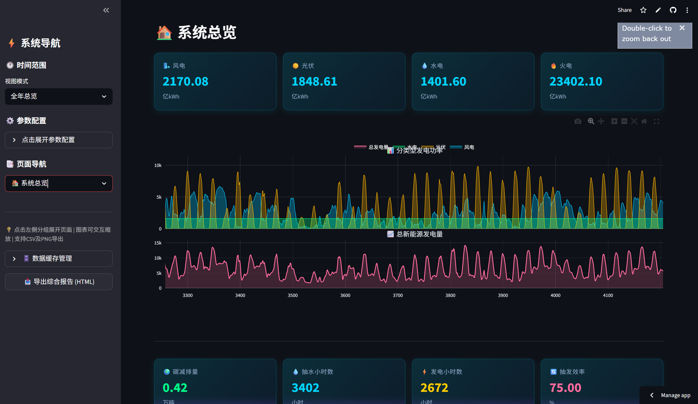
图3-1 系统总览：能源出力卡片 + 全年发电曲线
第二组四张指标卡片展示碳减排量、抽水小时数、发电小时数和抽发效率。下方展示"月度能源对比图"（需高级功能模块可用），可直观对比各月的风、光、水、火电出力比例。
点击"📥 导出总览数据"按钮，可将8项核心指标导出为CSV文件，便于外部数据分析。
综合分析报告（导航路径：📊 核心看板 → 📈 综合分析报告）提供优化前后的系统性能对比分析。
顶部四张指标卡片分别显示新能源渗透率、新能源总发电量、碳减排量和抽水小时数。
六维雷达图直观对比"优化前"与"优化后"在新能源消纳、调峰深度、系统灵活性、碳减排、经济性、可靠性六个维度的综合得分变化。
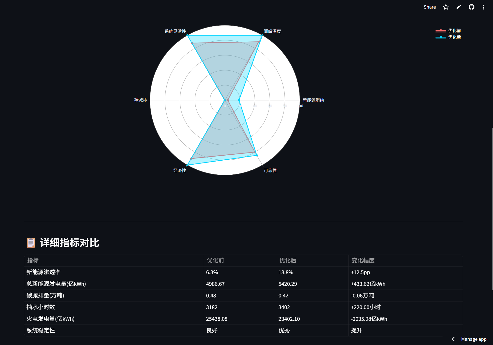
图3-2 综合分析报告：优化前后六维雷达图对比
表格列出优化前后各项指标的具体数值及变化幅度，一目了然地展示抽水蓄能系统带来的综合效益提升。
新能源分析页面（导航路径：📈 专项分析 → 🌿 新能源分析）专注于风电、光伏、水电三类可再生能源的出力特性分析。
通过滑动条选择日期（0-364，对应全年365天），顶部三张卡片实时显示选定日的风电、光伏、水电当日累计出力（MWh）。
与系统总览一致的分类型发电功率曲线，但受左侧边栏"时间范围"筛选器控制，可按月、按季节、按典型日或全年显示。
下拉框可选择7种典型日类型（全部日、工作日、周末、春/夏/秋/冬季），图表显示所选类型下24小时的火电、风电、光伏、水电平均功率曲线。
若高级功能模块可用，显示当日能量平衡堆叠图，直观展示新能源与火电的出力分配关系。
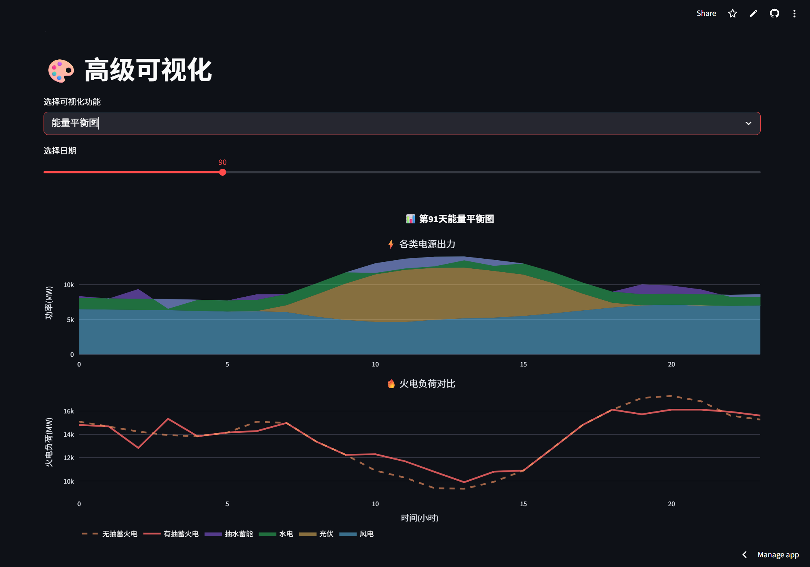
图4-1 新能源分析：当日指标 + 典型日负荷曲线 + 能量平衡
抽水蓄能调度页面（导航路径：📈 专项分析 → 💧 抽水蓄能调度）是系统的核心功能页面之一，展示抽水蓄能电站的逐日逐时调度策略。
页面顶部为桑基图，以流动带宽形式可视化展示选定日内电力系统中各能源的流向和比例关系——左侧为各类电源（风电、光伏、水电、抽蓄、火电），右侧为电网负荷。线条宽度代表能量大小，绿色流量代表新能源直供，蓝色流量代表抽蓄发电补充，红色流量代表火电出力。
滑动条选择日期后，桑基图及后续图表同步更新至所选日的数据。
四张指标卡片汇总全年调度统计数据：发电小时数、抽水小时数、停机小时数、综合效率。
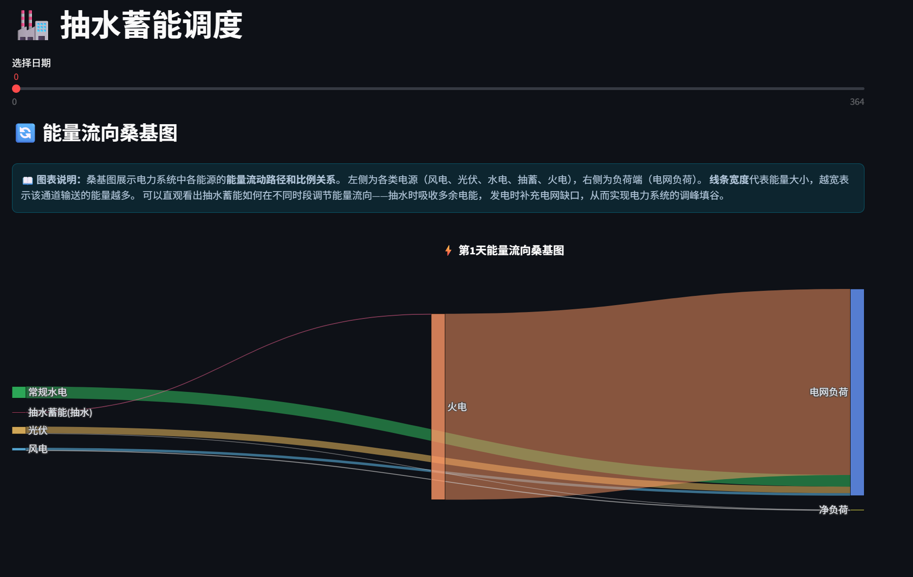
图4-2 抽水蓄能调度：能量流向桑基图 + 调度策略统计
火电调峰与碳减排页面（导航路径：📈 专项分析 → 🔥 火电调峰与碳减排）通过对比有无抽水蓄能两种情景，量化评估抽水蓄能的调峰效果与碳减排贡献。
双面板图表：上板对比有抽蓄（蓝色实线）与无抽蓄（红色虚线）情景下的火电功率；下板展示抽水蓄能水库状态（CC值），反映水库蓄能量的时序变化。
两张指标卡片分别显示年碳减排量（万吨）和火电变化量（亿kWh）。下方展示全年365天的日碳减排柱状图——绿色柱代表当日为减排，红色柱代表当日为增排（碳减排量为负值表示有抽蓄后火电反而增发的异常日）。
12个月柱状图展示碳减排量的月度分布，便于识别碳减排的季节性规律。
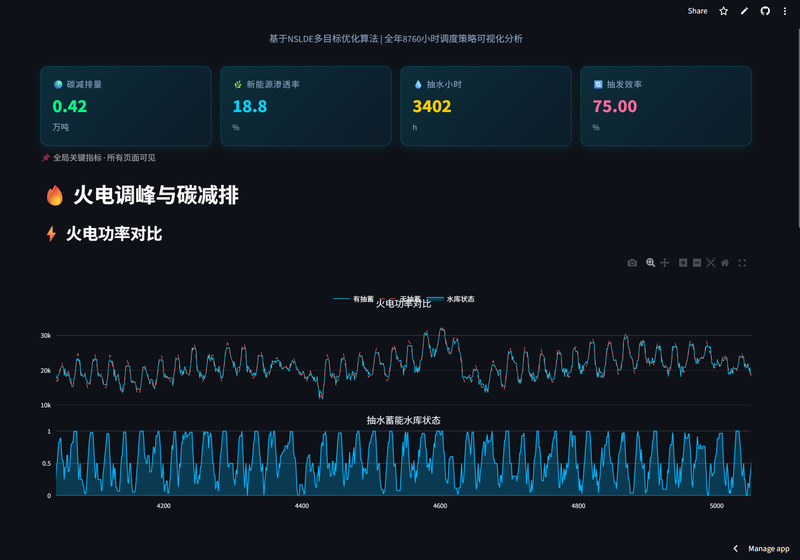
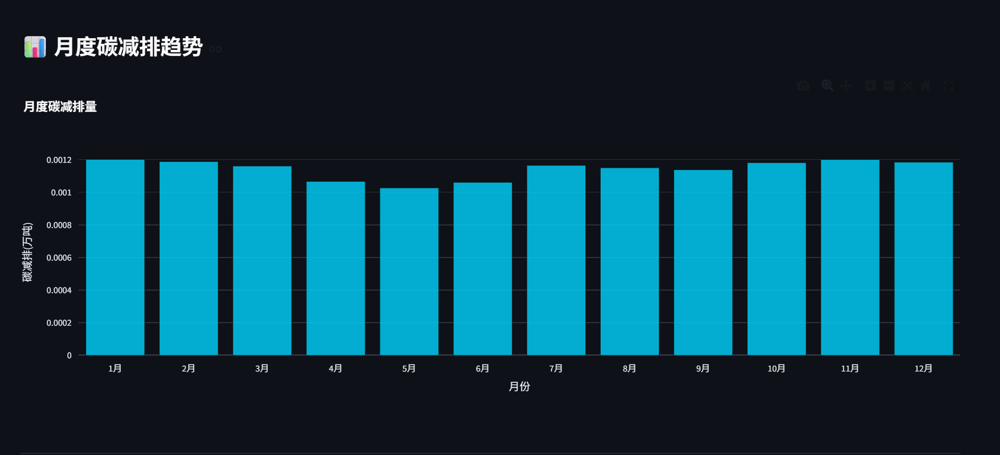
图4-3 火电调峰与碳减排：功率对比 + 碳减排柱状图
Pareto前沿分析页面（导航路径：📈 专项分析 → 🎯 Pareto前沿分析）展示NSLDE多目标优化算法的核心成果——双目标Pareto最优解集。
四个选项卡分别对应春、夏、秋、冬四季的Pareto前沿图片，每季包含3张子图（各来源项目的分析文档图8-11）。图片来源于MATLAB分析文档中的最优前沿可视化。
双柱状图展示目标函数1（火电调峰容量）和目标函数2（碳排放）的分布，横轴为日期，纵轴为各目标函数值。
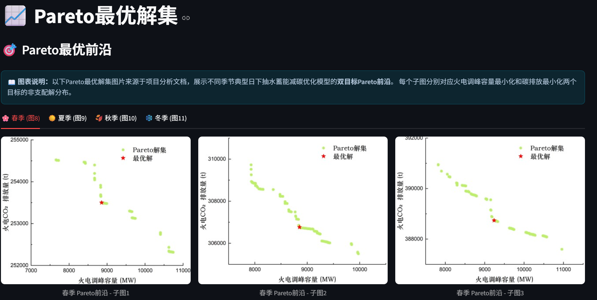
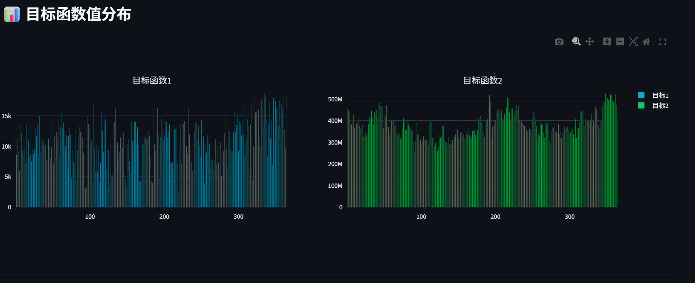
图4-4 Pareto前沿分析：四季Pareto前沿 + 目标函数值分布
计算公式详解页面（导航路径：⚙️ 模型与参数 → 📐 计算公式详解）完整展示本系统所依据的数学模型，分为七大板块：
目标1 — 火电参与调峰容量最小化：
f₁ = min Σ Pthermal,t（t = 1→T），最小化火电出力以促进新能源消纳。
目标2 — 系统碳排放量最小化：
f₂ = min Σ S(Pthermal,t) · Pthermal,t，碳排放强度随火电负荷率分段变化。
包含10类约束：水量平衡、水库水位、抽蓄出力、火电出力、上库水位、发电流量、抽水流量、初末水位、水流转续、库容控制。
包含混沌初始化、Pareto支配关系、差分进化算子、Lévy飞行扰动等核心算法的数学公式及伪代码流程。
按火电负荷率分段：常规调峰（>50%）、不投油深度调峰（30%-50%）、投油深度调峰（≤30%），每段对应不同的碳排放强度计算公式。
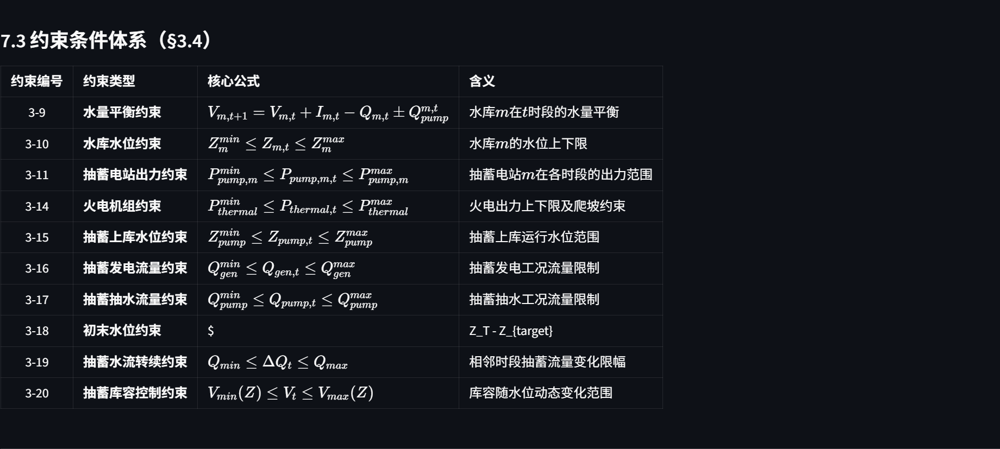
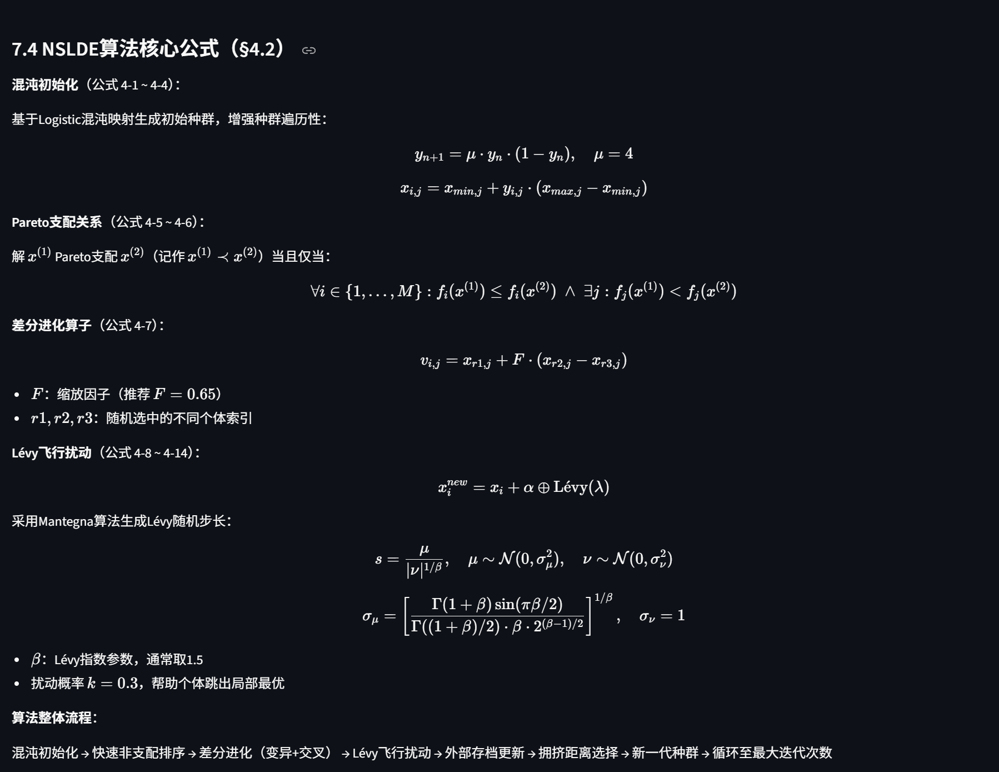
图5-1 计算公式详解：NSLDE算法公式及模型约束条件
参数调整页面（导航路径：⚙️ 模型与参数 → ⚙️ 参数调整）是系统最具交互性的功能模块，支持用户实时修改模型参数并立即查看重算结果。
侧边栏"参数预设方案"下拉框提供4种预定义方案，用户可一键切换：
| 预设方案 | 额定功率 | 蓄能时长 | 抽水效率 | 碳排放系数 |
|---|---|---|---|---|
| 📋 默认方案 | 1400 MW | 4 h | 75% | 0.5 |
| 🌿 高消纳方案 | 2000 MW | 5 h | 85% | 0.4 |
| 🌍 深度低碳方案 | 1600 MW | 4 h | 80% | 0.35 |
| ⚡ 灵活调峰方案 | 2500 MW | 3 h | 70% | 0.55 |
展开侧边栏的"⚙️ 参数配置"面板，可逐项手动调整以下参数（调整后点击"✅ 应用参数并重新计算"）：
点击应用按钮后系统自动重算全部指标，显示：碳减排量、发电小时数、抽发效率三张对比卡片，以及选定日的抽水蓄能功率曲线（红绿色柱状图）。
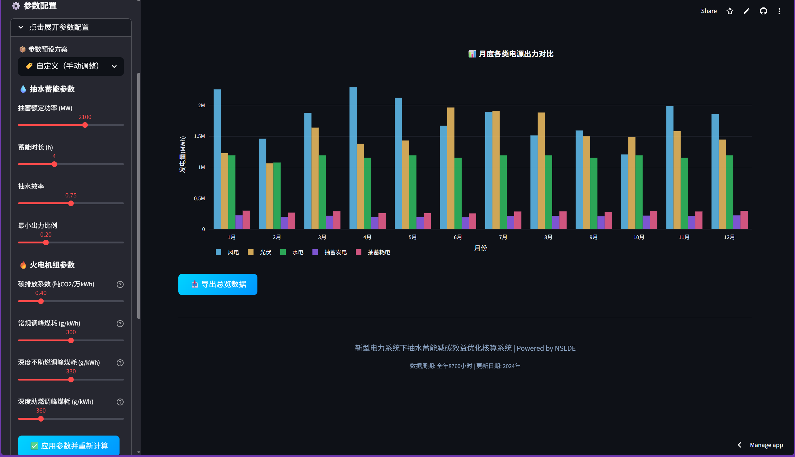
图5-2 参数调整：侧边栏参数配置 + 主区域计算结果
原始数据浏览页面（导航路径：⚙️ 模型与参数 → 🗃️ 原始数据浏览）提供7类底层MATLAB数据的表格视图与统计分析。
左侧下拉框选择数据集（风电/光伏/水电/火电负荷/抽蓄功率/有抽蓄火电/无抽蓄火电），滑动条设定日期范围后，主区域以表格形式展示所选天的24小时数据。
可选显示最小值、最大值、均值、标准差四项统计量，并配有数据分布直方图。
支持将当前视图下的数据表导出为CSV文件（UTF-8编码）。
高级可视化页面（导航路径：🔬 高级功能 → 🎨 高级可视化）提供7种专业级可视化图表，通过下拉框切换选择：
| 可视化功能 | 图表类型 | 需要日期参数 | 说明 |
|---|---|---|---|
| 桑基图 — 能量流向 | Sankey Diagram | 是 | 展示电力能源从源头到负荷的流动路径 |
| 3D水库可视化 | 3D Surface | 是 | 三维水面展示水库蓄能状态变化 |
| 能量平衡图 | Stacked Bar | 是 | 24小时各能源出力堆叠展示 |
| Pareto前沿3D图 | 3D Scatter | 否 | 三维散点图展示Pareto解分布 |
| 碳减排热力图 | Heatmap | 否 | 365天×24小时的碳减排热度分布 |
| 月度对比图 | Grouped Bar | 否 | 12个月各能源产出分组柱状对比 |
| 能源流动动画 | Animated | 是 | 24小时动态展示能源出力变化 |
每种可视化均支持PNG图片下载，点击图表下方的"📥 下载图表"按钮即可保存当前视图。
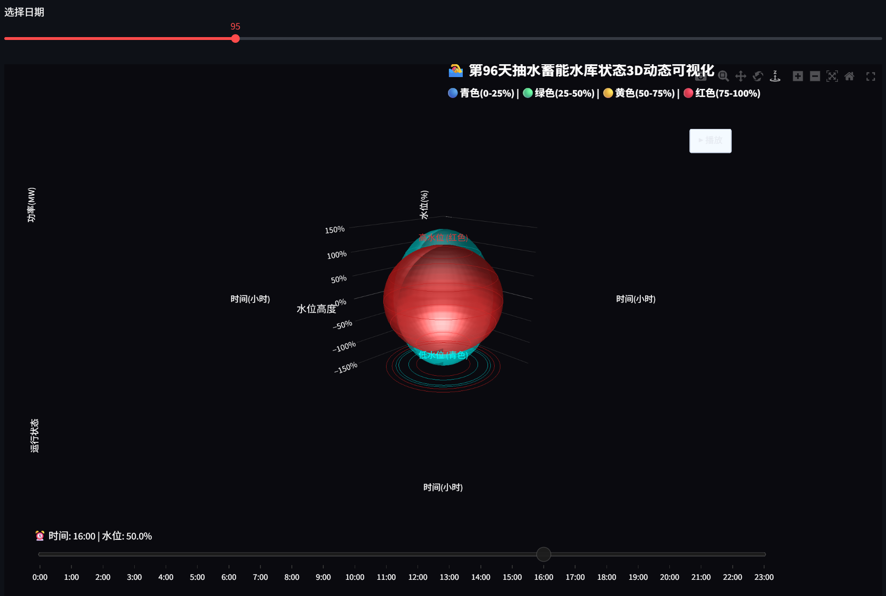
图6-1 高级可视化：3D水库可视化效果示意
高级分析页面（导航路径：🔬 高级功能 → 🧠 高级分析）提供5类高级分析功能：
选择分析参数（抽发效率、装机容量、碳排放系数、电价之一），系统自动计算该参数在±50%范围内变动时对碳减排量的影响。输出影响曲线图和基准值分析。
可分别调整风电增长比例(0.5-2.0)、光伏增长比例(0.5-2.0)、负荷增长比例(0.8-1.5)三个参数，模拟不同新能源发展情景下的系统表现。输出情景对比图和关键指标变化。
系统基于数据分析自动生成决策建议卡，按优先级（高/中/低）排序。每张建议卡片包含：现状分析、建议措施、预期效果。
展示年度统计指标（总风电/光伏/水电/火电）和相关性分析表（风电-光伏、风电-负荷、光伏-负荷、抽蓄-风电、抽蓄-光伏五组相关系数）。
选择分析指标（碳减排量、抽水小时数、新能源占比之一），展示：每日原始值曲线、7日移动平均线、线性趋势线，并给出趋势方向（上升/下降/平稳）和斜率。
图6-2 高级分析：决策建议（按优先级排序的彩色卡片）
A/B参数对比页面（导航路径：🔬 高级功能 → 🔬 A/B参数对比）支持选择两组不同的参数方案，一键对比各项指标差异。
左右两栏分别选择方案A和方案B（下拉框从4种预设方案中选择），点击"🔍 开始对比分析"按钮启动双方案计算。
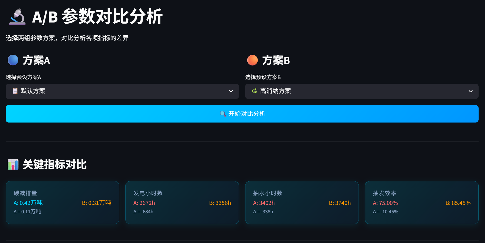
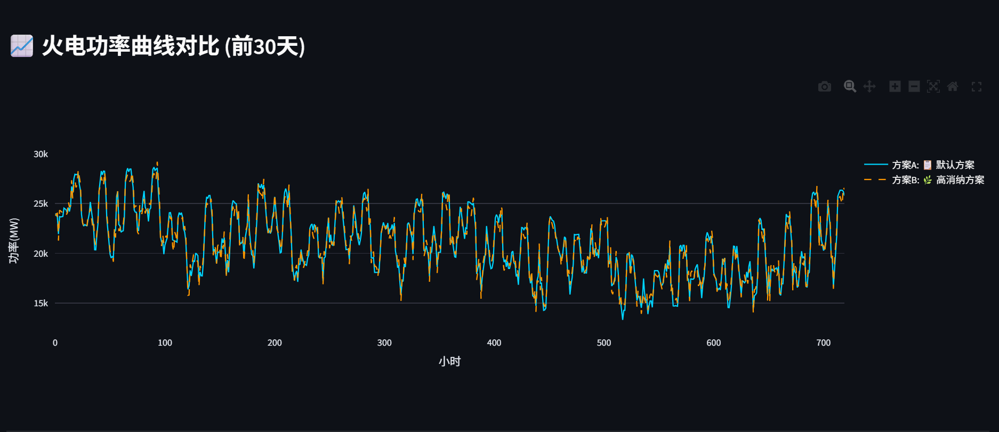
图6-3 A/B参数对比：KPI对比卡片 + 火电功率曲线对比
左侧边栏"🕐 时间范围"区域提供四种视图模式，影响全部页面的数据展示范围：
| 视图模式 | 数据范围 | 适用场景 |
|---|---|---|
| 全年总览 | 365天 × 24小时 = 8760小时 | 默认模式，查看全年整体趋势 |
| 按月查看 | 选定月份的28-31天 | 分析特定月份的出力特性 |
| 按季节查看 | 春(1-3月)/夏(4-6月)/秋(7-9月)/冬(10-12月) | 对比四季差异 |
| 典型日分析 | 选定单日 | 精细化分析某一天的逐时数据 |
系统支持三种导出格式：
展开侧边栏"🗄️ 数据缓存管理"，点击"🔄 清除数据缓存"按钮可强制系统重新加载MATLAB数据文件并重算所有派生指标。缓存有效期为1小时，到期自动刷新。
| 参数名 | 代码变量 | 默认值 | 取值范围 | 单位 |
|---|---|---|---|---|
| 抽蓄额定功率 | Zpump | 1400 | 500 - 3000 | MW |
| 蓄能时长 | h | 4 | 2 - 8 | h |
| 抽水效率 | efficiency | 0.75 | 0.6 - 0.9 | — |
| 最小出力比例 | min_power_ratio | 0.2 | 0.1 - 0.5 | — |
| 碳排放系数 | carbon_factor | 0.5 | 0.3 - 0.8 | 吨CO₂/万kWh |
| 常规调峰煤耗 | coal_high | 300 | 280 - 320 | g/kWh |
| 深度不助燃调峰煤耗 | coal_mid | 330 | 310 - 350 | g/kWh |
| 深度助燃调峰煤耗 | coal_low | 370 | 350 - 400 | g/kWh |
| 文件名 | 格式 | 维度 | 内容说明 |
|---|---|---|---|
| A.mat | MATLAB .mat | 100×27×365 | 100个Pareto解的决策变量矩阵 |
| AA.mat | MATLAB .mat | 365×23 / 365×2 | 最优解决策变量 + 目标函数值 |
| wind.txt | 文本矩阵 | 365×24 | 全年逐时风电功率 (MW) |
| solar.txt | 文本矩阵 | 365×24 | 全年逐时光伏功率 (MW) |
| hydro.txt | 文本矩阵 | 365×24 | 全年逐时水电功率 (MW) |
| FH.txt | 文本矩阵 | 365×24 | 全年逐时火电负荷 (MW) |
| solution.txt | 文本矩阵 | 100×27 | Pareto解集的火电出力方案 |
A：请检查数据文件（A.mat、AA.mat及各.txt文件）是否存在于 frontend/ 根目录下。系统依赖这些数据文件进行所有计算。
A：请确认 v2_features/ 目录下的 visualization.py 和 analysis.py 文件存在且语法正确。该模块为可选增强功能，不影响核心页面的正常使用。
A：调整参数后必须点击"✅ 应用参数并重新计算"按钮才会触发重新计算。仅拖动滑块不会自动重算。
A：展开警告下方的"查看详细错误"可获取具体错误信息。常见原因包括：Plotly版本不兼容、数据维度异常、内存不足。建议升级至最新版Plotly并确保至少有4GB可用内存。
A：默认参数定义在 app.py 的 init_session_state() 函数中。修改后重启Streamlit服务即可生效。
A：系统使用UTF-8 BOM（utf-8-sig）编码导出CSV。若仍出现乱码，请在Excel中使用"数据 → 从文本/CSV导入"，选择UTF-8编码后导入。
| 公式编号 | 公式名称 | 所在章节 |
|---|---|---|
| 3-1 | 常规调峰阶段碳排放强度 | §5.1 — 7.1节 |
| 3-2 | 不投油深度调峰额外碳排放强度 | §5.1 — 7.1节 |
| 3-5 | 投油深度调峰碳排放强度 | §5.1 — 7.1节 |
| 3-6 | 全工况碳排放强度分段函数 | §5.1 — 7.1节 |
| 3-7 | 目标1：火电调峰容量最小化 | §5.1 — 7.2节 |
| 3-8 | 目标2：碳排放量最小化 | §5.1 — 7.2节 |
| 3-9 ~ 3-20 | 约束条件体系（12项） | §5.1 — 7.3节 |
| 4-1 ~ 4-14 | NSLDE算法核心公式 | §5.1 — 7.4节 |
— 全文完 —
新型电力系统下抽水蓄能减碳效益优化核算系统 · 用户操作手册 V2.0
基于NSLDE多目标优化算法 | 全年8760小时调度策略可视化分析平台